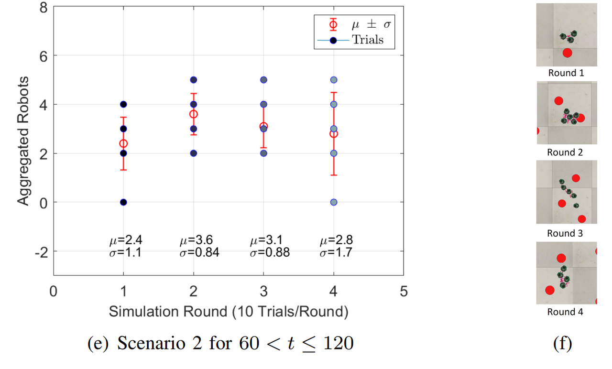
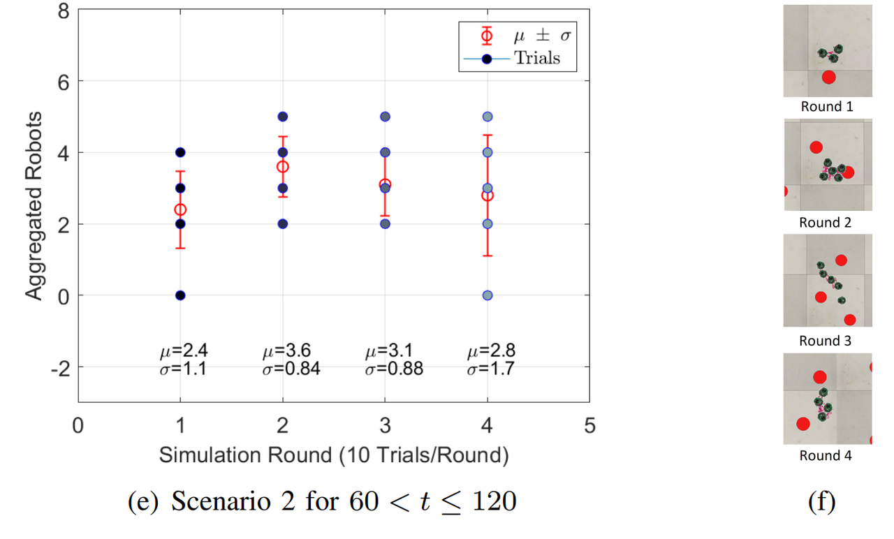

Simple foraging and random aggregation strategy for swarm robotics without communication
Table of Contents
- 1 Simple Foraging and Random Aggregation Strategy for swarm robotics without communication
- 2 Pre-requisites
- 3 Source code
- 4 Problem formulation
- 5 Foraging and Random Aggregation
- 6 Unicycle model
- 7 Rebound avoider/follower algorithm
- 8 Search blob/ePuck algorithm
- 9 Results and discussion
- 10 Lua code of the algorithm
- 11 References
Simple Foraging and Random Aggregation Strategy for swarm robotics without communication¶
In swarm robotics Foraging and Aggregation are basic tasks yet that can be challenging when there is no communication between the robots. This paper proposes a strategy using a Mealy Deterministic Finite State Machine (DFSM) that switches between five states with two different algorithms, the Rebound avoider/follower through proximity sensors, and the Search blob/ePuck using the 2D image processing of the ePuck embedded camera. Ten trials for each scenario are simulated on V-rep in order to analyse the performance of the strategy in terms of the mean and standard deviation.
Pre-requisites¶
- Basic robotics theory.
- Finite State Machine theory.
- V-rep proEdu v3.6
- Knowledge in Lua progamming language.
Source code¶
Problem formulation¶
The task is to design a control strategy for e-puck robots that do the following:
- Explore the given environment to collect resources (foraging);
- While foraging, avoid collisions between robots and with the environment boundary.
For an object to be collected, a robot's centre must be within 5 cm of the object's centre. There won't be any collisions between the robot and the object. For the evaluation of this task, two foraging scenarios will be considered:
- With a single robot;
- With a group of 5 robots (all with an identical controller).
The controller used for both scenarios MUST be the same.
To assess the foraging performance of the strategy, it's expected to conduct 10 trials per scenario. Each trial should last 60 seconds of simulation time. Show the number of objects collected in total over time (average and standard deviation over 10 trials). Include one plot for each scenario.
Important:
- Do not use wheel speeds the e-puck cannot achieve. That is, when using function
sim.setJointTargetVelocity(.,.), make sure the velocity argument is bounded by[-6.24, 6.24]. - You should use the sensors available on the e-puck platform (e.g. camera, proximity). You may implement additional sensors, however, these must not provide any global information (e.g. absolute position or orientation).
Foraging and Random Aggregation¶
The DFSM diagram in Fig. 1, which is defined by (1) and (2), starts in the Behaviour state where the robot is set as $\textit{avoider}$ while the simulation time is $t\leq 60[s]$. During that time, the Foraging state looks for the green blobs with the Search blob/ePuck algorithm while avoiding obstacles using the Rebound algorithm. Moreover, a Random Movement state is used to introduce randomness to the system so the agent can take different paths if there is no blob or obstacle detection. For $60<t\leq 120$, the Behaviour of the robot is set to $\textit{follower}$ and switches to Random Aggregation state where it uses both algorithms, the Rebound to follow ePucks with the proximity sensors and the Search to look for the closest ePuck wheels. For both algorithms, the output is the angle of attack $\alpha_n$, where $n$ depends on the current state.
\begin{align*} S&=\lbrace B,F,R,A,Ra \rbrace \tag{1}\\ \varSigma&= \lbrace t\leq 60,60<t\leq 120,bl~\exists,bl~\nexists,ob~\exists,ob~\nexists,eP~\exists, eP~\nexists \rbrace \tag{2}\\ s_0&=\lbrace B \rbrace \\ \end{align*}where, $S$ is the finite set of states, $\varSigma$ is the input alphabet, $\delta:S\times\varSigma$ is the state transition function, Table 1, $s_0$ is the initial state, $\exists$ and $\nexists$ mean detection and no detection respectively.
| Input | Current State | Next State | Output |
|---|---|---|---|
| $t ≤ 60$ | Behaviour | Foraging | avoider |
| $60 < t ≤ 120$ | Behaviour | Aggregation | follower |
| blob $\exists$ | Foraging | Foraging | $\alpha_C$ |
| blob $\nexists$ | Foraging | Random Movement | $\alpha_{C_r}$ |
| obstacle $\exists$ | Foraging | Rebound | $\alpha_R$ |
| obstacle $\nexists$ | Rebound | Foraging | - |
| obstacle $\exists$ | Aggregation | Rebound | $\alpha_R$ |
| obstacle $\nexists$ | Rebound | Aggregation | - |
| ePuck $\exists$ | Aggregation | Aggregation | $\alpha_e$ |
| ePuck $\nexists$ | Aggregation | Random Movement | $\alpha_{e_r}$ |

Unicycle model¶
The Unicycle model in Fig. 2a [1] controls the angular velocities of the right and left wheels, $v_r$ and $v_l$ as follows,
\begin{align} v_r&= \dfrac{2~V_x+\omega~L}{2~R} \tag{3}\\ v_l&=\dfrac{2~V_x-\omega~L}{2~R} \tag{4} \end{align}where, $V_x$ is the linear velocity of the robot, $L$ is the distance between the wheels, $R$ is the radius of each wheel, and $\omega$ is the angular velocity of the robot. Using $\alpha_n$ and the simulation sampling period $T$, the control variable for the simulation is $\omega=\alpha_n/T$, refer to code line 24, 197, and 215.
Rebound avoider/follower algorithm¶
The Rebound algorithm [2] calculates the Rebound angle $\alpha_R$ to avoid/follow an obstacle/objective given $\alpha_0=\pi/N$ and $\alpha_i=i~\alpha_0$,
\begin{align}\tag{5} \alpha_R&=\dfrac{\sum_{i=-N/2}^{N/2}~\alpha_i~D_i}{\sum_{i=-N/2}^{N/2}~D_i} \end{align}where, $\alpha_0$ is the uniformly distributed angular pace, $N$ is the number of sensors, $\alpha_i$ is the angular information per pace $\alpha_i~\epsilon\left[-\frac{N}{2},\frac{N}{2}\right]$, and $D_i$ is the distance value obtained by the proximity sensors, refer to code line 18 and 139.
The weight vector given by $\alpha_i$ sets the robot behaviour for each corresponding mapped sensor $\lbrace s_1,s_2,s_3,s_4,s_5,s_6\rbrace$. For the $\textit{avoider}$ is $\lbrace -3,-2,-1,1,2,3 \rbrace$, and for the $\textit{follower}$ is $\lbrace 3,2,1,-1,-2,-3 \rbrace$. Fig. 2b and Fig. 2c show an example of $\alpha_R$ with the Vector Field Histogram (VFH) for the $\textit{avoider}$ case. Refer to code line 128 and 132.
Search blob/ePuck algorithm¶
The ePuck embedded camera on V-rep is a vision sensor that filters the RGB colours of the blobs and other ePucks. Not collected Blobs are mapped as green and collected ones as red, and the ePuck wheels are also mapped because they have green and red parts, refer to code line 97. The data of interest that this sensor outputs are the size, centroid's 2D position, and orientation of the detected objects. Therefore, when objects are detected by the camera, a simple routine finds the biggest one which is the closest relative to the ePuck, and using (6) and (7), it can be calculated the angle of attack $\alpha_C$ or $\alpha_e$ for the blobs and ePucks respectively, refer to Fig. 2d and code line 150. The orientation value is used to differentiate between objects, for blobs is $=0$ and for ePuck wheels is $\neq 0$, refer to code line 105.
\begin{align} \alpha_C &= \arctan \dfrac{x_b-x_o}{y_b-y_o} \tag{6}\\ \alpha_e &= \arctan \dfrac{x_e-x_o}{y_e-y_o} \tag{7} \end{align}where, $(x_o,y_o)$, $(x_b,y_b)$, and $(x_e,y_e)$ are the robot, blob and another ePuck wheel relative position in the 2D image. In the Random state, either the robot is foraging but does not see any blobs or is aggregating but there is no other ePuck nearby, (6) and (7) ared modified with a random value $w$ with a probability function $P$,
\begin{align} \alpha_{C_r} &= \alpha_C~w \tag{8}\\ \alpha_{e_r} &= \alpha_e~w \tag{9} \end{align}where, $P(\lbrace w~\epsilon~\Omega:X(w)=1/3 \rbrace)$ and $\Omega=\lbrace -1,0,1 \rbrace$, refer to code line 158 and 205.
Results and discussion¶
For both Scenarios, 4 Rounds of 10 trials each are simulated. Each Round has different initial positions of the robots, Fig. 3b and Fig. 3d, and each trial stops at $t=60$. In Scenario 1, Fig. 3a shows that Round 4 has the best performance because $68\%$ of the time the robot will forage between 13 and 15 blobs. For Scenario 2, Fig. 3b shows that Round 1 hast the best performance, $68\%$ of the time the swarm will forage between 37 and 39 blobs. For the Aggregation case, that is simulated only in Scenario 2 Fig. 3e and Fig. 3f, Round 2 shows the best results, $68\%$ of the time between 2 and 4 agents aggregate at some random point.
 



References¶
[1] Jawhar Ghommam, Maarouf Saad, and Faical Mnif. “Formation path following control of unicycle-type mobile robots”. In: 2008 IEEE International Conference on Robotics and Automation. IEEE, 2008. DOI: 10.1109/robot.2008.4543495.
[2] I. Susnea et al. “The bubble rebound obstacle avoidance algorithm for mobile robots”. In: IEEE ICCA 2010. IEEE, 2010. DOI: 10.1109/icca.2010.5524302.
Comments
Comments powered by Disqus